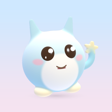

Mochi Pet
A soft, squishy 3D pet who talks, sings, remembers each child by name, and learns ABC, numbers and pinyin with them, in English and 中文.
No ads · No purchases · No accounts · No data collected · Works offline
Help
- How do I open the grown-ups settings?
- Tap the small lock at the top right, then press and hold the button for 3 seconds. There you can change the volume, Mochi's voice, vibration, conversations, language, and add or remove children's names.
- How do I add my child's name?
- In the grown-ups settings, under Children's names, type the name and tap Add. Tap a name's × to remove it.
- How does Mochi copy what my child says?
- Tap the microphone at the end of the bottom row and talk. When your child pauses, Mochi says it back in her own voice. The first time, the device asks for microphone permission.
- Mochi can't hear spoken answers.
- Spoken answers use the device's on-device speech recognition. If it is not available for the chosen language, children can answer by tapping a picture instead.
- There is no sound.
- Check the volume buttons, and the Volume and Mochi's voice settings in the grown-ups settings.
- How do I start again?
- Grown-ups settings → Start over, then tap again to confirm. This erases the pet's progress on this device.
Contact
Email zenbainc@gmail.com. We read every message.